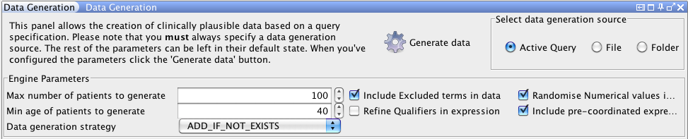

SNOMED CT, Java and MySQL are registered trademarks
This is the part of Snofyre's graphical user interface that allows the user to create new data based on an query loaded in Snofyre.

This panel is usually minised and is located at the bottom left of the Synofyre window.